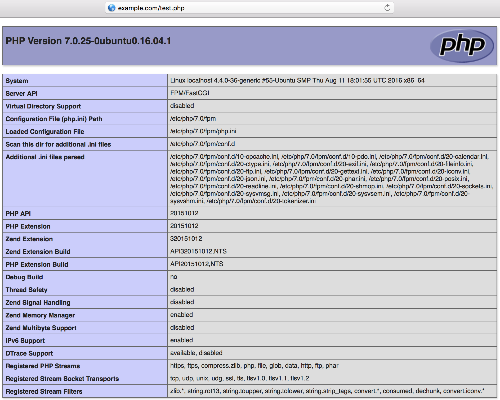

Serve PHP with PHP-FPM and NGINX
Updated by Linode Written by Linode
The PHP Fast Process Manager is a FastCGI handler for PHP scripts and applications. It’s commonly paired with web servers to serve applications which require a PHP framework, such as web forums or login gateways, while the web server returns HTML, JavaScript, and other non-PHP content.
Before You Begin
You will need a working NGINX setup. If you do not already have that, complete Part 1 of our Getting Started with NGINX series: Basic Installation and Setup.
You will need root access to the system, or a user account with
sudoprivileges.Update your system’s packages.
Install and Configure PHP-FPM
Install the PHP process manager. On CentOS, Debian, and Ubuntu, the package name to install is
php-fpm.You can verify the PHP-FPM service is running with:
systemctl status php7.0-fpm.serviceDepending on your distribution and PHP version, the PHP configuration files will be stored in different locations. This guide is using PHP 7.0 from Ubuntu’s repositories on Ubuntu 16.04 as an example, and the
/etc/php/7.0/fpm/pool.d/www.confand/etc/php/7.0/fpm/php.inifiles are what we’ll be modifying.Find those full file paths using a
findcommand:find / \( -iname "php.ini" -o -name "www.conf" \)The output should look similar to:
root@localhost:~# find / \( -iname "php.ini" -o -name "www.conf" \) /etc/php/7.0/fpm/php.ini /etc/php/7.0/fpm/pool.d/www.conf /etc/php/7.0/cli/php.iniThe
listen.ownerandlisten.groupvariables are set towww-databy default, but they need to match the user and group NGINX is running as. If you installed NGINX using our Getting Started with NGINX series, then your setup will be using thenginxuser and group. You can verify with:ps -aux | grep nginxThe output should be similar to:
root@localhost:~# ps -aux | grep nginx root 3448 0.0 0.0 32500 3516 ? Ss 18:21 0:00 nginx: master process / usr/sbin/nginx -c /etc/nginx/nginx.conf nginx 3603 0.0 0.0 32912 2560 ? S 18:24 0:00 nginx: worker process nginx 3604 0.0 0.0 32912 3212 ? S 18:24 0:00 nginx: worker processThis shows the NGINX master process is running as
root, and the worker processes are running as thenginxuser and group. Change thelistenvariables to that:sed -i 's/listen.owner = www-data/listen.owner = nginx/g' /etc/php/7.0/fpm/pool.d/www.conf sed -i 's/listen.group = www-data/listen.group = nginx/g' /etc/php/7.0/fpm/pool.d/www.confWhen pairing NGINX with PHP-FPM, it’s possible to return to NGINX a
.phpURI that does not actually exist within the site’s directory structure. The PHP processor will process the URI, and execute the.phpfile, because its job is to process anything handed to it by NGINX. This presents a security problem.It’s important to limit what NGINX passes to PHP-FPM so malicious scripts can’t be injected into return streams to the server. Instead, the request is stopped, possibly then resulting in a 404. There are multiple ways to do this (see the NGINX wiki) but here we chose to specify the setting in PHP-FPM rather than in NGINX’s configuration.
sed -i 's/;cgi.fix_pathinfo=1/cgi.fix_pathinfo=0/g' /etc/php/7.0/fpm/php.iniYou’ll notice that
;cgi.fix_pathinfo=1is commented out by default. Setting it to0and uncommenting it will enforce the configuration should there be any upstream changes in the default value in the future.Restart PHP-FPM to apply the changes:
systemctl restart php7.0-fpm.service
Configure the NGINX Server Block
Again pulling from Part 1 of our NGINX series, we’ll start with a basic Server Block for a static HTTP page being served from
/var/www/example.com. Replaceexample.comwith your site’s domain or IP address, and therootdirective with your site’s root directory.- /etc/nginx/conf.d/example.com.conf
-
1 2 3 4 5 6 7server { listen 80 default_server; listen [::]:80 default_server; server_name example.com www.example.com; root /var/www/example.com; index index.html; }
To the Server Block above, add a
locationblock containing the PHP directives. You should then have:- /etc/nginx/conf.d/example.com.conf
-
1 2 3 4 5 6 7 8 9 10 11 12 13 14server { listen 80 default_server; listen [::]:80 default_server; server_name example.com www.example.com; root /var/www/example.com; index index.html; location ~* \.php$ { fastcgi_pass unix:/run/php/php7.0-fpm.sock; include fastcgi_params; fastcgi_param SCRIPT_FILENAME $document_root$fastcgi_script_name; fastcgi_param SCRIPT_NAME $fastcgi_script_name; } }
This is just a bare minimum to get PHP-FPM working and you will want to configure it further for your specific needs. Some further points about the configuration above:
- The location
~* \.php$means that NGINX will apply this configuration to all.phpfiles (file names are not case sensitive) in your site’s root directory, including any subdirectories containing PHP files. - The
*in the~* \.php$location directive indicates that PHP file names are not case sensitive. This can be removed if you prefer to enforce letter case. - The
fastcgi_passlocation must match thelisten =value in/etc/php/7.0/fpm/pool.d/www.conf. It is preferable for performance reasons for PHP-FPM to listen on a UNIX socket instead of a TCP address. Only change this if you require PHP-FPM use network connections. - Using
$document_rootin theSCRIPT_FILENAMEparameter instead of an absolute path is preferred by NGINX’s documentation.
Here’s a variation of the
locationblock above. This includes anifstatement which disallows the FPM to process files in the/uploads/directory. This is a security measure which prevents people from being able to upload.phpfiles to your server or application which the FastCGI process manager would then execute.This only applicable if you allow users to upload or submit files to your site. Change the name of the directory from
uploadsto whatever suits your need.- /etc/nginx/conf.d/example.com.conf
-
1 2 3 4 5 6 7 8location ~* \.php$ { if ($uri !~ "^/uploads/") { fastcgi_pass unix:/run/php/php7.0-fpm.sock; } include fastcgi_params; fastcgi_param SCRIPT_FILENAME $document_root$fastcgi_script_name; fastcgi_param SCRIPT_NAME $fastcgi_script_name; }
Reload NGINX:
nginx -s reloadCreate a test PHP file so you can verify FPM is working. In the Server Block above, our site is being served from
/var/www/example.com, so we’ll create a test file there:echo "<?php phpinfo(); ?>" >> /var/www/example.com/test.phpAccess
test.phpfrom a web browser, using your site’s domain or Linode’s IP address. You should see the PHP configuration page:
More Information
You may wish to consult the following resources for additional information on this topic. While these are provided in the hope that they will be useful, please note that we cannot vouch for the accuracy or timeliness of externally hosted materials.
Join our Community
Find answers, ask questions, and help others.
This guide is published under a CC BY-ND 4.0 license.